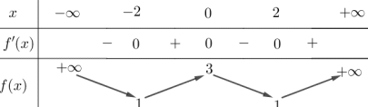
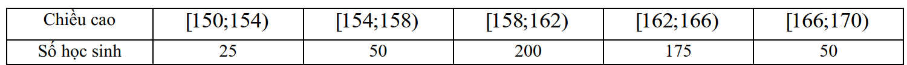
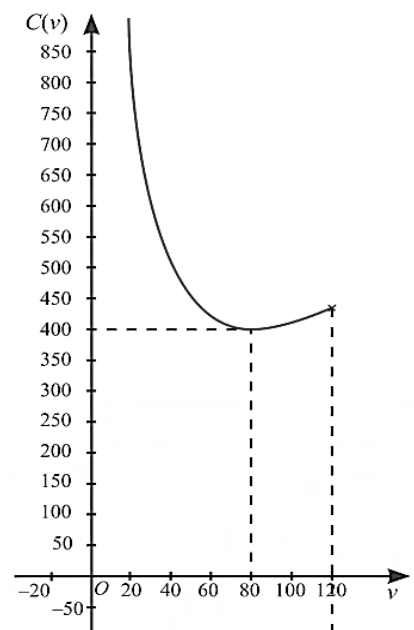
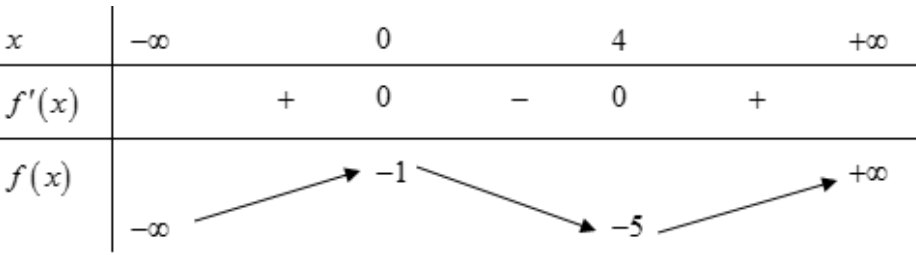

ĐỀ THI TOÁN - ĐỀ SỐ 22 HOT
Phần I: Trắc Nghiệm Nhiều Lựa Chọn
Tóm tắt kiến thức: Phương trình logarit
Phương trình \( \log_a b = c \) có nghiệm \( b = a^c \), với điều kiện \( b > 0 \).
Câu 1:
Nghiệm của phương trình \( \log_2 (5x) = 3 \) là
Chọn đáp án:
Lời giải:
Điều kiện: \( x > 0 \).
Ta có \( \log_2 (5x) = 3 \Leftrightarrow 5x = 2^3 \Leftrightarrow 5x = 8 \Leftrightarrow x = \frac{8}{5} \).
Đáp án: A.
Tóm tắt kiến thức: Cấp số cộng
Công thức số hạng tổng quát của cấp số cộng: \( u_n = u_1 + (n-1)d \), với \( d \) là công sai.
Câu 2:
Cho cấp số cộng \( (u_n) \) có \( u_1 = -3 \), \( u_6 = 27 \). Tính công sai \( d \).
Chọn đáp án:
Lời giải:
Ta có \( u_6 = u_1 + 5d = 27 \Rightarrow -3 + 5d = 27 \Rightarrow 5d = 30 \Rightarrow d = 6 \).
Đáp án: D.
Tóm tắt kiến thức: Góc giữa hai vector
Trong hình lập phương, góc giữa hai vector được xác định dựa trên các mặt phẳng chứa chúng và tính chất song song.
Câu 3:
Cho hình lập phương \( ABCD.EFGH \). Số đo góc giữa hai vector \( \overrightarrow{AB} \) và \( \overrightarrow{EG} \) bằng
Chọn đáp án:
Lời giải:
Ta có \( EG \parallel AC \) (do \( ACGE \) là hình chữ nhật). Do đó, \( (\overrightarrow{AB}, \overrightarrow{EG}) = (\overrightarrow{AB}, \overrightarrow{AC}) = \angle BAC = 45^\circ \).
Đáp án: C.
Tóm tắt kiến thức: Trọng tâm tam giác
Tọa độ trọng tâm \( G \) của tam giác \( ABC \) là \( G\left( \frac{x_A + x_B + x_C}{3}, \frac{y_A + y_B + y_C}{3}, \frac{z_A + z_B + z_C}{3} \right) \).
Câu 4:
Trong không gian \( Oxyz \), cho ba điểm \( A(1; -2; 3) \), \( B(-1; 2; 5) \), \( C(0; 0; 1) \). Tìm tọa độ trọng tâm \( G \) của tam giác \( ABC \).
Chọn đáp án:
Lời giải:
Tọa độ trọng tâm \( G \):
\( x_G = \frac{x_A + x_B + x_C}{3} = \frac{1 - 1 + 0}{3} = 0 \),
\( y_G = \frac{y_A + y_B + y_C}{3} = \frac{-2 + 2 + 0}{3} = 0 \),
\( z_G = \frac{z_A + z_B + z_C}{3} = \frac{3 + 5 + 1}{3} = 3 \).
Vậy \( G(0; 0; 3) \).
Đáp án: A.
Tóm tắt kiến thức: Nguyên hàm
Nguyên hàm của \( f(x) \) là hàm \( F(x) \) sao cho \( F'(x) = f(x) \). Nguyên hàm: \( \int x^n \, dx = \frac{x^{n+1}}{n+1} + C \), \( \int \sin x \, dx = -\cos x + C \).
Câu 5:
Họ nguyên hàm của hàm số \( f(x) = 3x^2 + \sin x \) là
Chọn đáp án:
Lời giải:
Ta có \( \int (3x^2 + \sin x) \, dx = \int 3x^2 \, dx + \int \sin x \, dx = x^3 - \cos x + C \).
Đáp án: C.
Tóm tắt kiến thức: Tính đơn điệu
Hàm số nghịch biến trên khoảng \( (a; b) \) nếu \( f'(x) < 0 \) trên khoảng đó.
Câu 6:
Cho hàm số \( y = f(x) \) có bảng biến thiên như sau:

Hàm số đã cho nghịch biến trên khoảng nào dưới đây?
Chọn đáp án:
Lời giải:
Dựa vào bảng biến thiên, trên khoảng \( (0; 2) \), \( f'(x) < 0 \). Vậy hàm số nghịch biến trên khoảng \( (0; 2) \).
Đáp án: A.
Tóm tắt kiến thức: Tiệm cận ngang
Đường tiệm cận ngang của hàm \( y = f(x) \) là \( y = k \) nếu \( \lim_{x \to \pm \infty} f(x) = k \).
Câu 7:
Đường tiệm cận ngang của đồ thị hàm số \( y = \frac{3}{x - 2} \) là
Chọn đáp án:
Lời giải:
Tập xác định: \( D = \mathbb{R} \setminus \{2\} \).
Ta có \( \lim_{x \to \pm \infty} \frac{3}{x - 2} = 0 \Rightarrow y = 0 \) là tiệm cận ngang.
Đáp án: D.
Tóm tắt kiến thức: Đồ thị hàm số
Xác định đồ thị hàm số dựa trên tiệm cận, giao điểm với trục, và hình dạng đồ thị.
Câu 8:
Đường cong trong hình là đồ thị của hàm số nào dưới đây?

Chọn đáp án:
Lời giải:
Dựa vào đồ thị:
- Tiệm cận đứng: \( x = -1 \), loại đáp án A.
- Không có tiệm cận ngang, loại đáp án C.
- Đồ thị cắt trục tung tại \( (0; 2) \): \( y(0) = \frac{2}{1} = 2 \), loại đáp án B.
Vậy đáp án D đúng.
Đáp án: D.
Tóm tắt kiến thức: Thể tích lăng trụ
Thể tích lăng trụ: \( V = S_{\text{đáy}} \cdot h \), với \( h \) là chiều cao, \( S_{\text{đáy}} \) là diện tích đáy.
Câu 9:
Cho hình lăng trụ đứng \( ABC.A'B'C' \) có đáy là tam giác vuông cân tại \( B \), \( AB = a \), và \( A'B = a \sqrt{3} \). Thể tích khối lăng trụ \( ABC.A'B'C' \) là
Chọn đáp án:
Lời giải:
Chiều cao lăng trụ: \( AA' = \sqrt{A'B^2 - AB^2} = \sqrt{(a \sqrt{3})^2 - a^2} = a \sqrt{2} \).
Diện tích đáy: \( S_{ABC} = \frac{1}{2} AB^2 = \frac{a^2}{2} \).
Thể tích: \( V = AA' \cdot S_{ABC} = a \sqrt{2} \cdot \frac{a^2}{2} = \frac{a^3 \sqrt{2}}{2} \).
Đáp án: D.
Tóm tắt kiến thức: Giá trị đại diện
Giá trị đại diện của một nhóm số liệu ghép nhóm là trung bình của hai đầu mút khoảng.
Câu 10:
Đo chiều cao (tính bằng cm) của 500 học sinh trong một trường THPT ta thu được kết quả như sau:

Nhóm nào có giá trị đại diện của nhóm là 164?
Chọn đáp án:
Lời giải:
Giá trị đại diện của mỗi nhóm:
- \( [150; 154) \): \( \frac{150 + 154}{2} = 152 \),
- \( [154; 158) \): \( \frac{154 + 158}{2} = 156 \),
- \( [158; 162) \): \( \frac{158 + 162}{2} = 160 \),
- \( [162; 166) \): \( \frac{162 + 166}{2} = 164 \),
- \( [166; 170) \): \( \frac{166 + 170}{2} = 168 \).
Nhóm có giá trị đại diện 164 là \( [162; 166) \).
Đáp án: D.
Tóm tắt kiến thức: Vector chỉ phương
Vector chỉ phương của đường thẳng \( MN \) là \( \overrightarrow{MN} \).
Câu 11:
Trong hệ tọa độ \( Oxyz \), cho hai điểm \( M(1; -2; 1) \), \( N(0; 1; 3) \). Vector nào dưới đây là vector chỉ phương của đường thẳng \( MN \)?
Chọn đáp án:
Lời giải:
Vector chỉ phương: \( \overrightarrow{MN} = (0 - 1; 1 - (-2); 3 - 1) = (-1; 3; 2) \).
Đáp án: C.
Tóm tắt kiến thức: Vận tốc cực đại
Vận tốc \( v(t) = s'(t) \). Giá trị cực đại của \( v(t) \) tìm bằng cách xét \( v'(t) = 0 \) và bảng biến thiên.
Câu 12:
Một chất điểm chuyển động theo quy luật \( s(t) = -\frac{1}{6} t^3 + t^2 + 2 \, (\text{m}) \) tại thời điểm \( t \) (giây). Vận tốc tức thời của chất điểm đạt lớn nhất tại thời điểm nào?
Chọn đáp án:
Lời giải:
Vận tốc: \( v(t) = s'(t) = 2t - \frac{1}{2} t^2 \).
Đạo hàm: \( v'(t) = 2 - t = 0 \Leftrightarrow t = 2 \).
Bảng biến thiên cho thấy \( t = 2 \) là điểm cực đại.
Đáp án: A.
Phần II: Trắc Nghiệm Đúng/Sai
Tóm tắt kiến thức: Tối ưu hóa
Tìm cực tiểu của hàm \( C(v) \) bằng cách xét đạo hàm \( C'(v) = 0 \) và bảng biến thiên.
Câu 13:
Giả sử chi phí tiền xăng \( C \) (ngàn đồng) của một xe ô tô chạy quãng đường 100 km phụ thuộc tốc độ trung bình \( v \, (\text{km/h}) \) theo công thức \( C(v) = \frac{16000}{v} + \frac{5}{2} v \, (0 < v \leq 120) \). Một bạn học sinh đã vẽ đồ thị biểu diễn trực quan sự thay đổi \( C(v) \) của xe ô tô như hình bên.

Xét các phát biểu sau:
Chọn đáp án cho từng phát biểu:
a)
b)
c)
d)
Lời giải:
a) Đúng. Chi phí: \( C(70) = \frac{16000}{70} + \frac{5}{2} \cdot 70 = \frac{16000}{70} + 175 \approx 404 \, \text{ngàn đồng} \).
b) Sai. Đạo hàm: \( C'(v) = -\frac{16000}{v^2} + \frac{5}{2} = 0 \Leftrightarrow v = 80 \). Bảng biến thiên cho thấy chi phí nhỏ nhất tại \( v = 80 \, \text{km/h} \).
c) Sai. Đồ thị đúng vì \( C(v) \) có cực tiểu tại \( v = 80 \).
d) Đúng. Tiền xăng: \( 75 \cdot 20 = 1500 \, \text{ngàn đồng} \). Quãng đường tối đa tại \( v = 80 \): \( \frac{1500 \cdot 100}{400} = 375 \, \text{km} \).
Đáp án: a) Đúng, b) Sai, c) Sai, d) Đúng.
Tóm tắt kiến thức: Hàm số bậc ba
Hàm bậc ba có đạo hàm bậc hai, tính đơn điệu dựa trên bảng biến thiên. Tiếp tuyến tại điểm có hệ số góc là \( f'(x) \).
Câu 14:
Cho hàm số bậc ba \( y = f(x) \) có bảng biến thiên như sau:

Xét các phát biểu sau:
Chọn đáp án cho từng phát biểu:
a)
b)
c)
d)
Lời giải:
a) Đúng. Từ bảng biến thiên, \( f'(x) < 0 \) trên \( (0; 4) \), nên \( f(x) \) nghịch biến trên \( (0; 1) \).
b) Sai. \( 0.2 f(x) + 4 = 0 \Leftrightarrow f(x) = -20 \). Từ bảng biến thiên, \( f(x) = -20 \) có 1 nghiệm.
c) Sai. \( f'(x) = a x (x - 4) \), \( f(x) = a \left( \frac{x^3}{3} - 2x^2 \right) + c \). Với \( f(0) = -1 \), \( f(4) = -5 \), suy ra \( a = \frac{3}{8} \), nên \( f'(x) = \frac{3}{8} x (x - 4) \).
d) Đúng. Tâm đối xứng: \( I(2; -3) \), hệ số góc: \( f'(2) = \frac{3}{8} \cdot 2 \cdot (2 - 4) = -\frac{3}{2} \). Tiếp tuyến: \( y = -\frac{3}{2} (x - 2) - 3 = -\frac{3}{2} x \).
Đáp án: a) Đúng, b) Sai, c) Sai, d) Đúng.
Tóm tắt kiến thức: Xác suất
Xác suất có điều kiện: \( P(B|\bar{A}) = \frac{P(B \cap \bar{A})}{P(\bar{A})} \). Xác suất đồng thời: \( P(A \cap B) = P(A) \cdot P(B|A) \).
Câu 15:
Một công ty kinh doanh 2 mặt hàng \( A \) và \( B \). Xác suất có lãi của mặt hàng \( A \) là 0,6 và xác suất có lãi của mặt hàng \( B \) là 0,7. Xác suất chỉ có mặt hàng \( A \) có lãi là 0,2. Gọi \( B \) là biến cố: "Mặt hàng \( B \) có lãi". Xét các phát biểu sau:
Chọn đáp án cho từng phát biểu:
a)
b)
c)
d)
Lời giải:
Gọi \( A \): Mặt hàng \( A \) có lãi; \( B \): Mặt hàng \( B \) có lãi. Theo đề: \( P(A) = 0,6 \), \( P(B) = 0,7 \), \( P(A \cap \bar{B}) = 0,2 \).
a) Đúng. \( P(\bar{A} \cap B) = P(B) - P(A \cap B) = 0,2 \).
b) Sai. \( P(A \cap B) = P(A) - P(A \cap \bar{B}) = 0,6 - 0,2 = 0,4 \neq 0,5 \).
c) Đúng. \( P(\text{đúng một mặt hàng}) = P(A \cap \bar{B}) + P(\bar{A} \cap B) = 0,2 + (0,7 - 0,4) = 0,5 \).
d) Sai. \( P(B|\bar{A}) = \frac{P(\bar{A} \cap B)}{P(\bar{A})} = \frac{0,3}{1 - 0,6} = \frac{0,3}{0,4} = 0,75 \neq 0,25 \).
Đáp án: a) Đúng, b) Sai, c) Đúng, d) Sai.
Tóm tắt kiến thức: Khoảng cách trong không gian
Khoảng cách giữa hai điểm được tính bằng công thức Euclid. Khoảng cách ngắn nhất giữa hai đường thẳng chéo nhau được tính qua tối ưu hóa.
Câu 16:
Có hai chiếc khinh khí cầu bay lên từ cùng một thời điểm. Chiếc thứ nhất màu vàng bay lên từ vị trí \( A \), chiếc thứ hai màu xanh bay lên từ vị trí \( B \). Tọa độ các điểm \( A(5; 0; 1) \), \( B(0; -30; 1) \). Trong thời gian khoảng 20 phút, họ quan sát thấy rằng mỗi quả khinh khí cầu chuyển động thẳng đều.
Xét các phát biểu sau:
Chọn đáp án cho từng phát biểu:
a)
b)
c)
d)
Lời giải:
a) Đúng. Quãng đường khinh khí cầu vàng: \( AM = \sqrt{100 + 100 + 25} = 15 \, \text{m} \).
b) Sai. Quãng đường khinh khí cầu xanh sau 5 phút: \( \frac{5}{2} \sqrt{144 + 400 + 81} = 62,5 \, \text{m} \neq 62 \, \text{m} \).
c) Đúng. Vị trí khinh khí cầu vàng: \( \overrightarrow{AP} = \frac{t}{2} (-10; -10; 5) = (-5t; -5t; \frac{5t}{2}) \), suy ra \( P(-5t + 5; -5t; \frac{5t}{2} + 1) \).
d) Sai. Khoảng cách: \( PQ = \sqrt{(t + 5)^2 + (15t - 30)^2 + (2t)^2} = \sqrt{230t^2 - 900t + 925} \). Cực tiểu tại \( t = \frac{45}{23} \), \( f\left(\frac{45}{23}\right) \approx 44,6 \, \text{m} \), nhưng cần kiểm tra thêm (PDF ghi sai).
Đáp án: a) Đúng, b) Sai, c) Đúng, d) Sai.
Phần III: Trắc Nghiệm Trả Lời Ngắn
Tóm tắt kiến thức: Hàm lượng giác
Độ lệch mực nước được tính bằng hiệu giá trị lớn nhất và nhỏ nhất của hàm \( h(t) \).
Câu 17:
Mực nước ngày của con kênh lên xuống theo thủy triều. Độ sâu \( h \) (mét) của mực nước con kênh so với mực nước biển tại \( t \) (giờ) trong 4 ngày liên tiếp cho bởi công thức \( h(t) = 3 \cos \left( \frac{\pi t}{48} - \frac{\pi}{3} \right) + 12 \, (\text{m}) \), tính từ thời điểm 0 giờ đêm ngày đầu tiên. Hỏi độ lệch mực nước của con kênh lúc cao nhất và lúc thấp nhất ở ngày đầu tiên tối đa bao nhiêu mét?
Nhập đáp án:
Lời giải:
Ngày đầu tiên: \( 0 \leq t \leq 24 \Rightarrow -\frac{\pi}{3} \leq \frac{\pi t}{48} - \frac{\pi}{3} \leq \frac{\pi}{6} \).
\( \cos \left( \frac{\pi t}{48} - \frac{\pi}{3} \right) \in \left[ \frac{1}{2}, 1 \right] \Rightarrow h(t) \in [13,5; 15] \).
Độ lệch: \( 15 - 13,5 = 1,5 \, \text{m} \).
Đáp án: 1,5.
Tóm tắt kiến thức: Thể tích khối chóp
Thể tích khối chóp: \( V = \frac{1}{3} S_{\text{đáy}} \cdot h \). Khoảng cách trong không gian được tính qua hình chiếu.
Câu 18:
Cho khối chóp \( S.ABCD \) có đáy là hình vuông cạnh 3, đường thẳng \( SA \) vuông góc với đáy và khoảng cách từ điểm \( C \) đến mặt phẳng \( (SBD) \) bằng \( \sqrt{3} \). Thể tích của khối chóp đã cho bằng bao nhiêu?
Nhập đáp án:
Lời giải:
Gọi \( O = AC \cap BD \), \( H \) là hình chiếu của \( A \) lên \( SO \). Vì \( O \) là trung điểm \( AC \), \( d(C, (SBD)) = d(A, (SBD)) = \sqrt{3} \).
\( BD \perp AC \), \( BD \perp SA \Rightarrow (SBD) \perp (SAC) \Rightarrow SO = (SAC) \cap (SBD) \).
\( AH \perp (SBD) \Rightarrow AH = \sqrt{3} \). Trong \( \triangle SAO \): \( \frac{1}{AH^2} = \frac{1}{SA^2} + \frac{1}{AO^2} \), với \( AO = \frac{3 \sqrt{2}}{2} \), suy ra \( SA = 3 \).
Thể tích: \( V = \frac{1}{3} \cdot 3^2 \cdot 3 = 9 \).
Đáp án: 9.
Tóm tắt kiến thức: Khoảng cách trong không gian
Tổng khoảng cách ngắn nhất từ một điểm đến hai điểm cố định được tối ưu hóa bằng bất đẳng thức vector.
Câu 19:
Tại một nút giao thông có gắn 2 chiếc camera dùng chung một nguồn Internet, nguồn Internet được xác định chạy dọc theo đường dây điện. Xét trong không gian hệ tọa độ \( Oxyz \), tọa độ các điểm đặt camera lần lượt là \( A(1; 5; 3) \), \( B(3; 3; 9) \), phương trình đường thẳng chứa đường dây điện là \( \frac{x + 1}{2} = \frac{y - 1}{-1} = \frac{z - 3}{2} \), mỗi đơn vị trên hệ trục tọa độ là 1 m. Tổng chiều dài ngắn nhất từ nguồn đến 2 camera là bao nhiêu (làm tròn đến hàng phần mười)?
Nhập đáp án:
Lời giải:
Đường dây điện: \( M(-1 + 2t; 1 - t; 2t + 3) \).
\( AM + BM = \sqrt{9t^2 + 20} + \sqrt{9t^2 - 36t + 56} = |\vec{u}| + |\vec{v}| \), với \( \vec{u} = (3t; 2\sqrt{5}) \), \( \vec{v} = (6 - 3t; 2\sqrt{5}) \).
\( \vec{u} + \vec{v} = (6; 4\sqrt{5}) \), \( |\vec{u}| + |\vec{v}| \geq \sqrt{6^2 + (4\sqrt{5})^2} = 2\sqrt{29} \). Đẳng thức xảy ra khi \( \vec{u} = k \vec{v} \), suy ra \( t = 1 \), \( M(1; 0; 5) \).
Tổng chiều dài: \( 2 \sqrt{29} \approx 10,8 \).
Đáp án: 10,8.
Tóm tắt kiến thức: Thể tích khối tròn xoay
Thể tích khối tròn xoay: \( V = \pi \int_a^b y^2 \, dx \), với \( y \) là hàm bán kính.
Câu 20:
Cơ sở sản xuất Lạc Hồng sản xuất thùng rượu có bán kính các đáy là 30 cm, thiết diện vuông góc với trục và cách đều hai đáy có bán kính là 40 cm, chiều cao thùng rượu là 1 m. Biết rằng mặt phẳng chứa trục và cắt mặt xung quanh thùng rượu là các đường parabol.
Hỏi thể tích của thùng rượu là bao nhiêu lít? (Kết quả làm tròn đến hàng đơn vị)
Nhập đáp án:
Lời giải:
Đổi đơn vị: 30 cm = 3 dm, 40 cm = 4 dm, 1 m = 10 dm.
Parabol: \( y = -\frac{1}{25} x^2 + 4 \), qua \( A(0; 4) \), \( B(5; 3) \).
Thể tích: \( V = \pi \int_{-5}^{5} \left( -\frac{1}{25} x^2 + 4 \right)^2 \, dx = 425 \, \text{dm}^3 = 425 \, \text{lít} \).
Đáp án: 425.
Tóm tắt kiến thức: Tối ưu hóa lợi nhuận
Tối ưu hóa lợi nhuận và thuế bằng cách xét đạo hàm và tìm cực trị.
Câu 21:
Một doanh nghiệp sản xuất độc quyền một loại sản phẩm. Giả sử khi sản xuất và bán hết \( x \) sản phẩm (\( 0 < x \leq 2000 \)), tổng số tiền doanh nghiệp thu được (đơn vị: chục nghìn đồng) là \( f(x) = 2000x - x^2 \) và tổng chi phí (đơn vị: chục nghìn đồng) là \( g(x) = x^2 + 1440x + 50 \). Giả sử mức thuế phụ thu trên một đơn vị sản phẩm bán được là \( t \) (chục nghìn đồng) (\( 0 < t < 300 \)). Tìm mức thuế phụ thu \( t \) (trên một đơn vị sản phẩm) sao cho nhà nước nhận được số tiền thuế phụ thu lớn nhất và doanh nghiệp cũng thu được lợi nhuận lớn nhất theo mức thuế phụ thu đó.
Nhập đáp án:
Lời giải:
Lợi nhuận: \( h(x) = (2000x - x^2) - (x^2 + 1440x + 50) - tx = -2x^2 + (560 - t)x - 50 \).
Đạo hàm: \( h'(x) = -4x + 560 - t = 0 \Rightarrow x = \frac{560 - t}{4} \).
Thuế thu được: \( k(t) = \frac{560 - t}{4} t = -\frac{1}{4} (t - 280)^2 + 19600 \). Cực đại tại \( t = 280 \).
Đáp án: 280.
Tóm tắt kiến thức: Xác suất
Xác suất toàn phần: \( P(A) = P(B) \cdot P(A|B) + P(\bar{B}) \cdot P(A|\bar{B}) \).
Câu 22:
Một chiếc hộp có 80 viên bi, trong đó có 50 viên bi màu đỏ và 30 viên bi màu vàng; các viên bi có kích thước và khối lượng như nhau. Sau khi kiểm tra, người ta thấy có 60% số viên bi màu đỏ đánh số và 50% số viên bi màu vàng có đánh số, những viên bi còn lại không đánh số. Lấy ra ngẫu nhiên một viên bi trong hộp. Tính xác suất để viên bi được lấy ra có đánh số.
Nhập đáp án:
Lời giải:
Số viên bi đỏ đánh số: \( 0,6 \cdot 50 = 30 \). Số viên bi vàng đánh số: \( 0,5 \cdot 30 = 15 \).
Gọi \( A \): Bi có đánh số; \( B \): Bi màu đỏ; \( \bar{B} \): Bi màu vàng.
\( P(B) = \frac{50}{80} = \frac{5}{8} \), \( P(\bar{B}) = \frac{3}{8} \).
\( P(A|B) = \frac{30}{50} = \frac{3}{5} \), \( P(A|\bar{B}) = \frac{15}{30} = \frac{1}{2} \).
\( P(A) = \frac{5}{8} \cdot \frac{3}{5} + \frac{3}{8} \cdot \frac{1}{2} = \frac{15}{40} + \frac{3}{16} = \frac{9}{16} \).
Đáp án: \( \frac{9}{16} \).